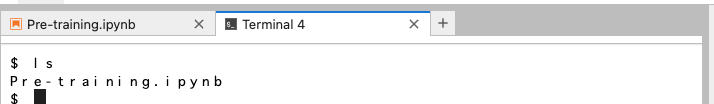

演習A：手順
A00: 自分のユーザ名とパスワードを確認する
- ユーザ名とパスワードはmanabaに記載してあります
- manabaのページのコンテンツの「２日目資料」のExcelファイルを確認してください。
A01: JupyterHub へアクセスする
- URLはmanabaに記載してあります
- manabaのページのコンテンツの「２日目資料」のExcelファイルを確認してください。
アクセスして下図のような画面が表示された場合、ADVANCEDをクリックしてください（下図、矢印）。

さらに、Proceed to [IPアドレス] (unsafe) をクリックします。

すると、下図のようなログイン画面がでてきます。事前に配布したユーザ名とパスワードを入力して Sign in をクリックします。

下図の画面が出たらログイン成功です。
A02: R のノートブックを開く
"Notebook" の中の "R" を選択します。

新しいタブが開き、下図のように右上に "R"と書かれていたら成功です。

A03: [Jupyter基本動作] ノートブックの名前を変更する
以下の要領で、ファイル名を "Pre-training.ipynb" と変更しましょう。


A04: [Jupyter基本動作] セルについて
四角で囲まれた場所をセルと呼びます。
セルにはコードを書き込むことができます。
A05: [Jupyter基本動作] セルを増やす
"+"のボタンを押した分だけセルが増えます。
現在選択されているセルの左側には青い縦棒が表示されます。 また、セル内部の右端にはそのセルを操作するためのアイコンが表示されます。

A06: [Jupyter基本動作] 実行してみる
- いずれかのセル（どれでもいい）に
1+1と書き込んでみましょう - ▶（再生ボタン）を押すと、選択しているセルのコードが実行されます。
セルのすぐ下に、実行結果が出力されます。
- 今の場合だと
2と表示されるはず
- 今の場合だと
A07: ターミナルでコマンドを実行する
- 画面左上もしくは右側の「+」ボタンを押します
- すると「ランチャー（Laucher）」が開きます
- 「Terminal」のアイコンをクリックします
- すると新しいタブでターミナル（白い画面、黒い画面のときもある）が表示されます。
lsを実行すると、Pre-training.ipynbが出力されるはずです。- 「
lsを実行する」とは「半角でlsと入力し、Enter (Return) キーを押す」という意味です - （以下のスクリーンショットでは
Pre-training.ipynbだけが表示されますが、皆さんの環境では他のファイルやディレクトリが見えていてもOKです） - 
- 「


A08: Jupyter Hub からノートブックをHTML形式に変換してダウンロードする
以下の要領で、Jupyter Hub から Pre-train.ipynb を HTML形式に変換してダウンロードしましょう。
- Notebook (.ipynbのファイル) を開いた状態で
- 上のメニューで
File > Save and Export Notebook As... > HTMLを選択する - 自分のパソコンに
Pre-train.htmlという名前のファイルが保存されていることを確認する- 拡張子は
.ipynbでなく.htmlになります
- 拡張子は
A09: Jupyter Hub からノートブックをRスクリプト形式に変換してダウンロードする
以下の要領で、Jupyter Hub から Pre-train.ipynb を Rスクリプト形式に変換してダウンロードしましょう。
- Notebook (.ipynbのファイル) を開いた状態で
- 上のメニューで
File > Save and Export Notebook As... > Executable scriptを選択する - 自分のパソコンに
Pre-train.rという名前のファイルが保存されていることを確認する- 拡張子は
.ipynbでなく.rになります
- 拡張子は
Rスクリプト（
.r）は実際には中身はテキストファイルです。Rのコードだけが書かれていて、結果は書かれていません。 ダウンロードしたRスクリプトをテキストエディタで開くと、中身が確認できます。